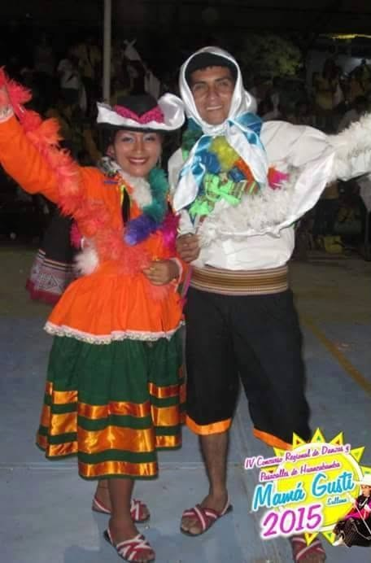
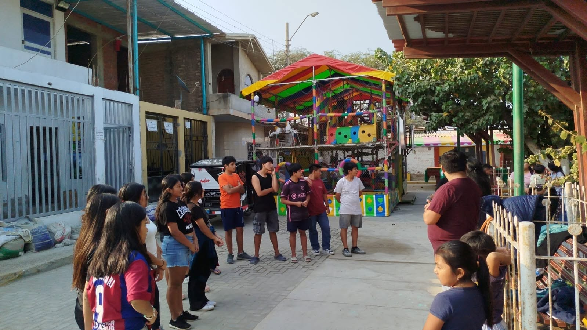
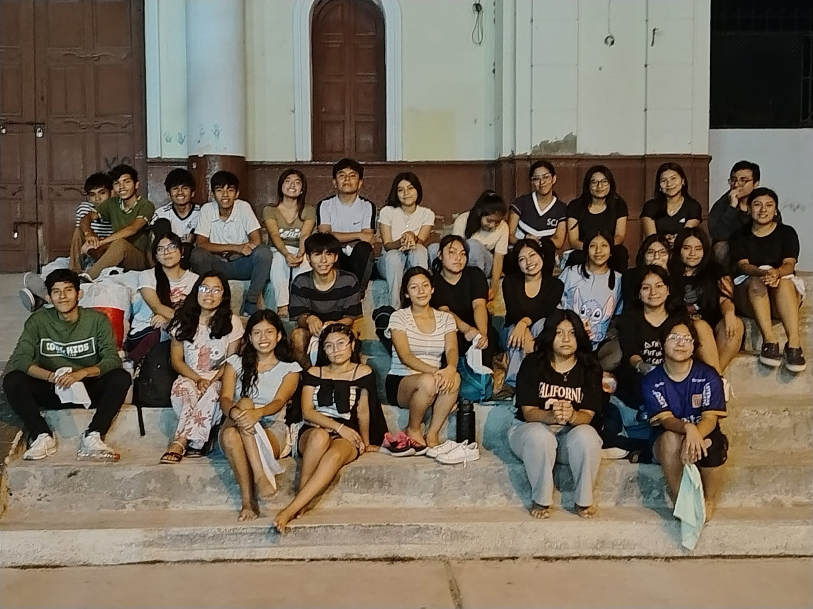

Los primeros ensayos
Cada ensayo comenzaba con calentamiento y estiramientos. Después venía la enseñanza de los pasos, mientras los integrantes con más experiencia ayudaban a quienes recién llegaban.
Una historia escrita con pasión, amistad y folklore desde 2009.
Descubre nuestra historiaAntes de los viajes, los concursos y los grandes escenarios, existió una conversación sencilla, una pregunta y el deseo de construir algo diferente. Así comenzó una historia que, con el paso de los años, se convertiría en una familia cultural.
“Hay historias que nacen de grandes planes. La nuestra comenzó con una pregunta.”
Desde muy joven, Edwin Omar Yovera Ruiz encontró en la danza una forma de expresar el amor por su cultura. Después de varios años como bailarín, comenzó a imaginar una agrupación propia: un espacio donde el folklore, la amistad y la formación de los jóvenes caminaran juntos.
La idea fue compartida con Edison Yarleque y con otros jóvenes cercanos a la parroquia de Catacaos. Poco a poco, una conversación entre amigos empezó a convertirse en un proyecto colectivo.
El 17 de octubre de 2009, cerca de quince jóvenes se reunieron para darle forma a aquel sueño. Todavía no tenían vestuarios, local ni recursos, pero ya compartían algo esencial: las ganas de comenzar.
¿Qué significa la danza para ustedes?
De aquella pregunta nacieron tres palabras que terminarían convirtiéndose en el nombre de una familia.“No teníamos un gran escenario. Nuestro escenario era cualquier lugar donde pudiéramos ensayar.”
Los primeros años estuvieron marcados por el entusiasmo. Los ensayos se realizaban en los exteriores de la Comunidad Campesina San Juan Bautista, donde el polvo, las noches y las ganas de aprender fueron los primeros compañeros de la agrupación.
Mientras unos aprendían sus primeros pasos, otros comenzaban a enseñar. Poco a poco se fue formando una familia donde cada integrante encontraba un espacio para crecer, compartir y disfrutar del folklore.
Cada ensayo comenzaba con calentamiento y estiramientos. Después venía la enseñanza de los pasos, mientras los integrantes con más experiencia ayudaban a quienes recién llegaban.
Al principio solo algunas prendas eran propias y el resto debía alquilarse. Cada nuevo vestuario fue posible gracias a rifas, polladas, bingos y al esfuerzo de integrantes y familiares.
Las presentaciones y los concursos locales permitieron ganar experiencia, enfrentar los primeros nervios y demostrar que aquel pequeño grupo comenzaba a encontrar su propio camino.
Bastaban unos minutos de descanso para que Kelvin encontrara la manera de hacer reír a todos. Sus ocurrencias ayudaban a aliviar el cansancio antes de volver a repetir los pasos.
—¡Ya pues, Kelvin! Concéntrate.
Manuel podía repasar una coreografía muchas veces, pero antes de salir al escenario casi siempre faltaba alguna prenda o accesorio. Entonces comenzaba una búsqueda entre mochilas, vestuarios y risas.
—Manuel, ¿ahora qué te falta?
Los sueños no se construyen solamente sobre un escenario. Se construyen ensayo tras ensayo.

“A veces no se necesita ganar para descubrir que algo está a punto de cambiar.”
En 2015, Pasión y Sentimiento Cultural participó en el concurso Mamá Gusti con la danza Kajchas de Caracara. La preparación exigió más dedicación, investigación y cuidado en cada detalle.
Muchos de los accesorios fueron elaborados por los propios integrantes. Cada elemento del vestuario y cada movimiento comenzaron a entenderse como parte de una propuesta artística completa.
La agrupación obtuvo el séptimo lugar. Sin embargo, aquel resultado no fue visto como una derrota. Fue el momento en que comprendieron que podían crecer, mejorar y competir a un nivel mucho más alto.
Aquel séptimo lugar no cerró una etapa. Abrió una nueva forma de mirar el futuro.
Conocer mejor el origen, el significado y la identidad de cada danza.
Elaborar accesorios y cuidar cada detalle de la propuesta escénica.
Comprender que cada logro dependía del compromiso de todo el grupo.
Convertir un resultado inesperado en motivación para seguir creciendo.
“Después de tantos ensayos, viajes y sacrificios, comenzaron a llegar los resultados que alguna vez parecieron lejanos.”
La experiencia adquirida durante los primeros años empezó a reflejarse sobre el escenario. Pasión y Sentimiento Cultural ya no era solamente una agrupación joven con ganas de bailar: se había convertido en un equipo más preparado, disciplinado y consciente de sus capacidades.
Durante 2016, la agrupación comenzó a ocupar los primeros lugares en diferentes competencias. Cada reconocimiento confirmó que el esfuerzo realizado durante años estaba comenzando a dar frutos.
En 2017 llegaron algunos de los triunfos más importantes de aquellos primeros años. Los campeonatos representaron mucho más que un trofeo: fueron la confirmación de que la agrupación podía competir y destacar entre grandes elencos.
Edison Yarleque, una de las primeras personas que creyó en el proyecto, decidió retirarse después de ver a Pasión y Sentimiento Cultural convertirse en una agrupación campeona.
Había acompañado el nacimiento del sueño y también pudo verlo alcanzar uno de sus primeros grandes objetivos.
Tras las lluvias y las inundaciones que afectaron a Catacaos, surgió una actividad cultural pensada para reunir nuevamente a la comunidad a través de la danza.
Aquella iniciativa se convirtió en el inicio de Catacaos, Color y Tradición, un proyecto que después crecería hasta transformarse en uno de los concursos más representativos organizados por la agrupación.
Aquellos años demostraron que los logros más importantes no nacen únicamente de una victoria, sino de la capacidad de convertir cada experiencia en una oportunidad para crecer.
“Cada viaje llevó nuestras danzas más lejos, pero también nos enseñó a valorar todavía más el lugar del que veníamos.”
Con el paso de los años, Pasión y Sentimiento Cultural comenzó a representar a Catacaos y al Perú fuera del país. Los viajes internacionales fueron una oportunidad para compartir nuestras tradiciones, conocer otras culturas y fortalecer los lazos entre los integrantes.
La agrupación cruzó por primera vez las fronteras del Perú para participar en un encuentro cultural en Ecuador. Para muchos integrantes fue también su primer viaje fuera del país.
Un año después, Pasión y Sentimiento Cultural regresó a Ecuador. La nueva experiencia permitió reencontrarse con agrupaciones amigas y seguir difundiendo las danzas y costumbres del Perú.
La tercera participación internacional confirmó que aquellos viajes ya formaban parte del crecimiento artístico y humano de la agrupación.
En 2025, la agrupación llegó hasta Bolivia para representar nuevamente a Catacaos y al Perú. El viaje estuvo lleno de aprendizajes, encuentros y una historia ocurrida durante el regreso que todavía se recuerda con cierta preocupación... y muchas risas.
Viajamos para compartir nuestras danzas, pero en cada regreso comprendimos que también llevábamos con nosotros el nombre, la memoria y la identidad de nuestro Perú.
“Con el tiempo entendimos que enseñar una danza también podía significar acompañar, formar y abrir nuevas oportunidades.”
Pasión y Sentimiento Cultural no creció únicamente sobre los escenarios. También lo hizo en la enseñanza, en el trabajo con la comunidad y en cada espacio donde un niño, un joven o una familia encontró una manera de acercarse a la cultura.
Entre 2010 y 2013, la agrupación desarrolló actividades formativas en Simbilá, acercando la danza y el folklore a nuevos niños y jóvenes.

Años después, el trabajo continuó en Pedregal Grande, donde nuevas generaciones comenzaron a descubrir la danza como una forma de expresión, identidad y encuentro.
Padres, madres, amigos y colaboradores acompañaron ensayos, actividades, viajes y presentaciones. Muchos logros también llevan el esfuerzo de quienes estuvieron detrás del escenario.
En 2021, Pasión y Sentimiento Cultural fue reconocida como Punto de Cultura por el Ministerio de Cultura, fortaleciendo su compromiso con la comunidad y la preservación del patrimonio cultural.
La incorporación a la Asociación de Folkloristas Latinoamericanos representó una nueva oportunidad para fortalecer vínculos, intercambiar experiencias y continuar difundiendo el folklore peruano dentro y fuera del país.
Acompañar el crecimiento artístico y humano de niños y jóvenes.
Llevar la danza y el folklore a diferentes comunidades.
Mantener vivas las tradiciones y transmitirlas a nuevas generaciones.
Crear vínculos entre integrantes, familias y comunidades.
La danza fue el punto de encuentro. La comunidad terminó convirtiéndose en nuestra verdadera obra.
“Algunos iniciaron el camino. Otros llegaron después para mantenerlo vivo.”
Con el paso de los años, muchos de los integrantes fundadores comenzaron a tomar otros caminos. Entre 2014 y 2015, una nueva generación asumió el reto de continuar la historia, aprender lo construido y aportar nuevas ideas a la agrupación.

La responsabilidad no era repetir el pasado, sino proteger su esencia y encontrar nuevas maneras de seguir avanzando.
Fueron quienes ensayaron cuando todavía no existían grandes escenarios, vestuarios completos ni certezas sobre el futuro. Su principal aporte fue creer que el sueño podía convertirse en una realidad.
Nuevos niños y jóvenes llegaron para aprender, competir, enseñar y asumir responsabilidades. Cada uno encontró una agrupación construida por otros, pero también un espacio donde podía dejar su propia huella.
Bailar con el mismo entusiasmo que dio origen a la agrupación.
Comprender que cada presentación comienza mucho antes del escenario.
Compartir lo aprendido para que otros puedan continuar el camino.
Representar con orgullo la cultura, las tradiciones y el nombre de Catacaos.
Pasión y Sentimiento Cultural sigue creciendo con cada ensayo, cada viaje, cada presentación y cada nueva persona que decide formar parte de este sueño.
Mientras existan personas dispuestas a enseñar, aprender y defender sus tradiciones, esta historia nunca tendrá un punto final.